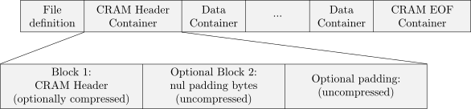
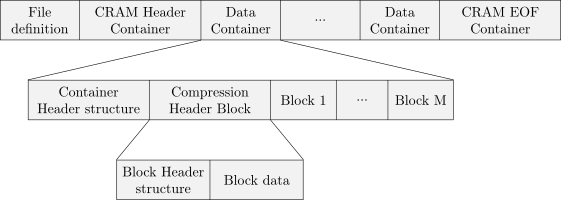
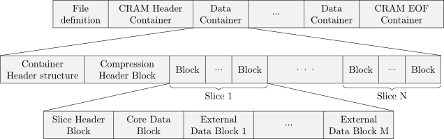
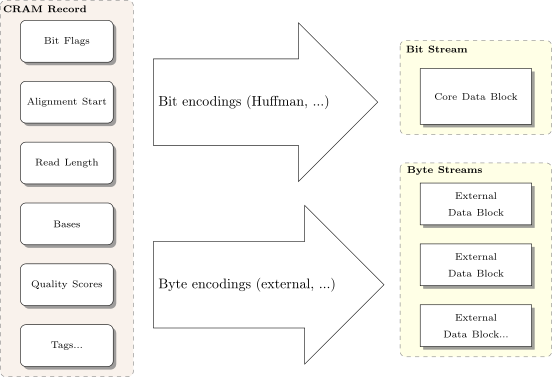
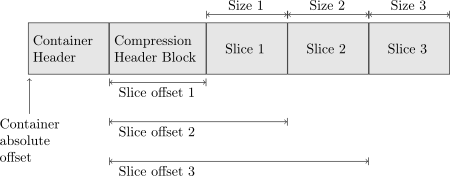

The master version of this document can be found at https://github.com/samtools/hts-specs.
This printing is version 07a4382 from that repository, last modified on the date shown above.
license: Apache 2.0
This specification describes the CRAM 3.0 and 3.1 formats.
CRAM has the following major objectives:
Significantly better lossless compression than BAM
Full compatibility with BAM
Effortless transition to CRAM from using BAM files
Support for controlled loss of BAM data
The first three objectives allow users to take immediate advantage of the CRAM format while offering a smooth transition path from using BAM files. The fourth objective supports the exploration of different lossy compression strategies and provides a framework in which to effect these choices. Please note that the CRAM format does not impose any rules about what data should or should not be preserved. Instead, CRAM supports a wide range of lossless and lossy data preservation strategies enabling users to choose which data should be preserved.
Data in CRAM is stored either as CRAM records or using one of the general purpose compressors (gzip, bzip2). CRAM records are compressed using a number of different encoding strategies. For example, bases are reference compressed by encoding base differences rather than storing the bases themselves.1
CRAM specification uses logical data types and storage data types; logical data types are written as words (e.g. int) while physical data types are written using single letters (e.g. i). The difference between the two is that storage data types define how logical data types are stored in CRAM. Data in CRAM is stored either as bits or bytes. Writing values as bits and bytes is described in detail below.
Signed byte (8 bits).
Signed 32-bit integer.
Signed 64-bit integer.
An array of any logical data type: array<type>
The CORE block supports bit-based encoding methods. A bit stream consists of a sequence of 1s and 0s. The bits are written most significant bit first where new bits are stacked to the right and full bytes on the left are written out. In a bit stream the last byte will be incomplete if less than 8 bits have been written to it. In this case the bits in the last byte are shifted to the left to complete a whole byte.
Let’s consider the following example. The table below shows a sequence of write operations:
| Operation order | Buffer state before | Written bits | Buffer state after | Issued bytes |
| 1 | xxxx xxxx | 1 | xxxx xxx1 (0x01) | - |
| 2 | xxxx xxxx | 0 | xxxx xx10 (0x02) | - |
| 3 | xxxx xx10 | 11 | xxxx 1011 (0x0B) | - |
| 4 | xxxx 1011 | 0000 0111 | xxxx 0111 (0x07) | 1011 0000 (0xB0) |
After flushing the above bit stream the following bytes are written: 0xB0 0x70. Please note that the last byte was 0x7 before shifting to the left and became 0x70 after that:
> echo "obase=16; ibase=2; 00000111" | bc
7
> echo "obase=16; ibase=2; 01110000" | bc
70
And the whole bit sequence:
> echo "obase=2; ibase=16; B070" | bc
1011000001110000
When reading the bits from the bit sequence, only the first 12 bits are meaningful and the remaining 4 will should be discarded.
When reading and writing to a bit stream our numeric values are typically held in a byte oriented data type, such as an 8-bit or 32-bit integer. The bit stream itself does not explicitly store the number of bits per value, and it will vary by context, so we must know this by other means. For example, we may be reading bits using a BETA encoding whose parameters indicate each value is 6 bits. So we read the next 6 bits into a 32-bit integer to get a value between 0 and 63. The next bits may be for a HUFFMAN encoding, in which case we can read one bit at a time until we match a known code-word in the Huffman tree.
Byte streams cannot be mixed in the same block as bit streams. The interpretation of byte stream is straightforward. CRAM uses little endianness for bytes when applicable and defines the following storage data types:
Boolean is written as 1-byte with 0x0 being ‘false’ and 0x1 being ‘true’.
Signed 32-bit integer, written as 4 bytes in little-endian byte order.
Signed 64-bit integer, written as 8 bytes in little-endian byte order.
This is an alternative way to write an integer value. The idea is similar to UTF-8 encoding and therefore
this encoding is called ITF-8 (Integer Transformation Format - 8 bit).
The most significant bits of the first byte have special meaning and are called ‘prefix’. These are 0 to 3 true bits followed by a 0 or 4 true bits. The number of 1’s denote the number of bytes to follow. So 0 for no bytes, 10 for one byte, 110 for two bytes, 1110 for three bytes and 1111 for four bytes. To accommodate 32 bits such representation requires 5 bytes with only 4 lower bits used in the last byte 5.
See ITF-8 for more details. The only difference between ITF-8 and LTF-8 is the number of bytes used to
encode a single value. To do so 64 bits are required and this can be done with 9 byte at most with the
first byte consisting of just 1s or 0xFF value.
A variable sized array with an explicitly written dimension. Array length is written first as integer (itf8),
followed by the elements of the array.
Implicit or fixed-size arrays are also used, written as type[ ] or type[4] (for example). These have no explicit dimension included in the file format and instead rely on the specification itself to document the array size.
Encoding is a data type that specifies how data series have been compressed. Encodings are defined as
encoding<type> where the type is a logical data type as opposed to a storage data type.
An encoding is written as follows. The first integer (itf8) denotes the codec id and the second integer (itf8) the number of bytes in the following encoding-specific values.
Subexponential encoding example:
| Value | Type | Name |
| 0x7 | itf8 | codec id |
| 0x2 | itf8 | number of bytes to follow |
| 0x0 | itf8 | offset |
| 0x1 | itf8 | K parameter |
The first byte “0x7” is the codec id.
The next byte “0x2” denotes the length of the bytes to follow (2).
The subexponential encoding has 2 parameters: integer (itf8) offset and integer (itf8) K.
offset = 0x0 = 0
K = 0x1 = 1
A map is a collection of keys and associated values. A map with N keys is written as follows:
| size in bytes | N | key 1 | value 1 | key ... | value ... | key N | value N |
Both the size in bytes and the number of keys are written as integer (itf8). Keys and values are written according to their data types and are specific to each map.
A string is represented as byte arrays using UTF-8 format. Read names, reference sequence names and tag values
with type ‘Z’ are stored as UTF-8.
Encoding is a data structure that captures information about compression details of a data series that are required to uncompress it. This could be a set of constants required to initialize a specific decompression algorithm or statistical properties of a data series or, in case of data series being stored in an external block, the block content id.
Encoding notation is defined as the keyword ‘encoding’ followed by its data type in angular brackets, for example ‘encoding<byte>’ stands for an encoding that operates on a data series of data type ‘byte’.
Encodings may have parameters of different data types, for example the EXTERNAL encoding has only one parameter, integer id of the external block. The following encodings are defined:
| Codec | ID | Parameters | Comment |
| NULL | 0 | none | series not preserved |
| EXTERNAL | 1 | int block content id | the block content identifier used to associate external data blocks with data series |
| Deprecated (GOLOMB) | 2 | int offset, int M | Golomb coding |
| HUFFMAN | 3 | array<int>, array<int> | coding with int/byte values |
| BYTE_ARRAY_LEN | 4 | encoding<int> array length, encoding<byte> bytes | coding of byte arrays with array length |
| BYTE_ARRAY_STOP | 5 | byte stop, int external block content id | coding of byte arrays with a stop value |
| BETA | 6 | int offset, int number of bits | binary coding |
| SUBEXP | 7 | int offset, int K | subexponential coding |
| Deprecated (GOLOMB_RICE) | 8 | int offset, int logm | Golomb-Rice coding |
| GAMMA | 9 | int offset | Elias gamma coding |
See section 13 for more detailed descriptions of all the above coding algorithms and their parameters.
The checksumming is used to ensure data integrity. The following checksumming algorithms are used in CRAM.
This is a cyclic redundancy checksum 32-bit long with the polynomial 0x04C11DB7. Please refer to ITU-T V.42 for more details. The value of the CRC32 hash function is written as an integer.
CRC32 sum is a combination of CRC32 values by summing up all individual CRC32 values modulo 232.
The overall CRAM file structure is described in this section. Please refer to other sections of this document for more detailed information.
A CRAM file consists of a fixed length file definition, followed by a CRAM header container, then zero or more data containers, and finally a special end-of-file container.
Figure 1: A CRAM file consists of a file definition, followed by a header container, then other containers.
Containers consist of one or more blocks. The first container, called the CRAM header container, is used to store a textual header as described in the SAM specification (see the section 7.1). This container may have additional padding bytes present for purposes of permitting inline rewriting of the SAM header with small changes in size. These padding bytes are undefined, but we recommend filling with nuls. The padding bytes can either be in explicit uncompressed Block structures, or as unallocated extra space where the size of the container is larger than the combined size of blocks held within it.

Figure 2: The the first container holds the CRAM header text.
Each container starts with a container header structure followed by one or more blocks. The first block in each container is the compression header block giving details of how to decode data in subsequent blocks. Each block starts with a block header structure followed by the block data.

Figure 3: Containers as a series of blocks
The blocks after the compression header are organised logically into slices. One slice may contain, for example, a contiguous region of alignment data. Slices begin with a slice header block and are followed by one or more data blocks. It is these data blocks which hold the primary bulk of CRAM data. The data blocks are further subdivided into a core data block and one or more external data blocks.

Figure 4: Slices formed from a series of concatenated blocks
Each CRAM file starts with a fixed length (26 bytes) definition with the following fields:
| Data type | Name | Value |
| byte[4] | format magic number | CRAM (0x43 0x52 0x41 0x4d) |
| unsigned byte | major format number | 3 (0x3) |
| unsigned byte | minor format number | 1 (0x1) |
| byte[20] | file id | CRAM file identifier (e.g. file name or SHA1 checksum) |
Valid CRAM major.minor version numbers are as follows:
The original public CRAM release.
The first CRAM release implemented in both Java and C; tidied up implementation vs specification differences in 1.0.
Gained end of file markers; compatible with 2.0.
Additional compression methods; header and data checksums; improvements for unsorted data.
Additional EXTERNAL compression codecs only.
CRAM 3.0 and 3.1 differ only in the list of compression methods available, so tools that output CRAM 3 without using any 3.1 codecs should write the header to indicate 3.0 in order to permit maximum compatibility.
The file definition is followed by one or more containers with the following header structure where the container content is stored in the ‘blocks’ field:
| Data type | Name | Value |
| int32 | length | the sum of the lengths of all blocks in this container (headers and data) and any padding bytes (CRAM header container only); equal to the total byte length of the container minus the byte length of this header structure |
| itf8 | reference sequence id | reference sequence identifier or -1 for unmapped reads -2 for multiple reference sequences. All slices in this container must have a reference sequence id matching this value. |
| itf8 | starting position on the reference | the alignment start position |
| itf8 | alignment span | the length of the alignment |
| itf8 | number of records | number of records in the container |
| ltf8 | record counter | 0-based sequential index of records in the file/stream. |
| ltf8 | bases | number of read bases |
| itf8 | number of blocks | the total number of blocks in this container |
| array<itf8> | landmarks | the locations of slices in this container as byte offsets from the end of this container header, used for random access indexing. For sequence data containers, the landmark count must equal the slice count. Since the block before the first slice is the compression header, landmarks[0] is equal to the byte length of the compression header. |
| int | crc32 | CRC32 hash of the all the preceding bytes in the container. |
| byte[ ] | blocks | The blocks contained within the container. |
In the initial CRAM header container, the reference sequence id, starting position on the reference, and alignment span fields must be ignored when reading. The landmarks array is optional for the CRAM header, but if it exists it should point to block offsets instead of slices, with the first block containing the textual header.
In data containers specifying unmapped reads or multiple reference sequences (i.e. reference sequence id ), the starting position on the reference and alignment span fields must be ignored when reading. When writing, it is recommended to set each of these ignored fields to the value 0.
The first container in a CRAM file contains a textual header in one or more blocks. See section 8.3 for more details on the layout of data within these blocks and constraints applied to the contents of the SAM header.
The landmarks field of the container header structure may be used to indicate the offsets of the blocks used in the header container. These may optionally be omitted by specifying an array size of zero.
Containers consist of one or more blocks. Block compression is applied independently and in addition to any encodings used to compress data within the block. The block have the following header structure with the data stored in the ‘block data’ field:
| Data type | Name | Value |
| byte | method | the block compression method (and first CRAM version): 0: raw (none)* 1: gzip 2: bzip2 (v2.0) 3: lzma (v3.0) 4: rans4x8 (v3.0) 5: rans4x16 (v3.1) 6: adaptive arithmetic coder (v3.1) 7: fqzcomp (v3.1) 8: name tokeniser (v3.1) |
| byte | block content type id | the block content type identifier |
| itf8 | block content id | the block content identifier used to associate external data blocks with data series |
| itf8 | size in bytes* | size of the block data after applying block compression |
| itf8 | raw size in bytes* | size of the block data before applying block compression |
| byte[ ] | block data | the data stored in the block: bit stream of CRAM records (core data block) byte stream (external data block) additional fields ( header blocks) |
| byte[4] | CRC32 | CRC32 hash value for all preceding bytes in the block |
* Note on raw method: both compressed and raw sizes must be set to the same value.
Empty blocks may occur in the files. Blocks with a raw (uncompressed) size of zero are treated as empty, irrespective of their “method” byte. This is equivalent to interpreting them as having method zero (raw) and compressed size of zero.
CRAM has the following block content types:
| Block content type | Block content type id | Name | Contents |
| FILE_HEADER | 0 | CRAM header block | CRAM header |
| COMPRESSION_HEADER | 1 | Compression header block | See specific section |
| SLICE_HEADERa | 2 | Slice header block | See specific section |
|
| 3 |
| reserved |
| EXTERNAL_DATA | 4 | external data block | data produced by external encodings |
| CORE_DATA | 5 | core data block | bit stream of all encodings except for external encodings |
a Formerly MAPPED_SLICE_HEADER. Now used by all slice headers regardless of mapping status.
Block content id is used to distinguish between external blocks in the same slice. Each external encoding has an id parameter which must be one of the external block content ids. For external blocks the content id is a positive integer. For all other blocks content id should be 0. Consequently, all external encodings must not use content id less than 1.
Data is stored in data blocks. There are two types of data blocks: core data blocks and external data blocks.The difference between core and external data blocks is that core data blocks consist of data series that are compressed using bit encodings while the external data blocks are byte compressed. One core data block and any number of external data blocks are associated with each slice.
Writing to and reading from core and external data blocks is organised through CRAM records. Each data series is associated with an encoding. In case of external encodings the block content id is used to identify the block where the data series is stored. Please note that external blocks can have multiple data series associated with them; in this case the values from these data series will be interleaved.
The SAM header is stored in the first block of the CRAM header container (see section 7.1). This block may be uncompressed or gzip compressed only. This block is followed by zero or more uncompressed expansion blocks. If present, these permit in-place editing of the CRAM header, allowing it to grow or shrink with a compensatory size change applied to the subsequence expansion block, avoiding the need to rewrite the remainder of the file. The contents of any expansion blocks should be zero bytes (nul characters).
The format of the initial SAM header block is a 32-bit little-endian integer holding the length of the text of the SAM header, minus nul-termination bytes, followed by the text itself. Although 32-bit, the maximum permitted value is , and all lengths must be positive.
The following constraints apply to the SAM header text:
The SQ:MD5 checksum is required unless the reference sequence has been embedded into the file.
The compression header block consists of 3 parts: preservation map, data series encoding map and tag encoding map.
The preservation map contains information about which data was preserved in the CRAM file. It is stored as a map with byte[2] keys:
| Key | Value data type | Name | Value |
| RN | bool | read names included | true if read names are preserved for all reads |
| AP | bool | AP data series delta | true if AP data series is delta, false otherwise |
| RR | bool | reference required | true if reference sequence is required to restore the data completely |
| SM | byte[5] | substitution matrix | substitution matrix |
| TD | array<byte> | tag ids dictionary | a list of lists of tag ids, see tag encoding section |
The boolean values are optional, defaulting to true when absent, although it is recommended to explicitly set them. SM and TD are mandatory.
Each data series has an encoding. These encoding are stored in a map with byte[2] keys and are decoded in approximately this order2 :
| Key | Value data type | Name | Value |
| BF | encoding<int> | BAM bit flags | see separate section |
| CF | encoding<int> | CRAM bit flags | see specific section |
| RI | encoding<int> | reference id | record reference id from the SAM file header |
| RL | encoding<int> | read lengths | read lengths |
| AP | encoding<int> | in-seq positions | if AP-Delta = true: 0-based alignment start delta from the AP value in the previous record. Note this delta may be negative, for example when switching references in a multi-reference slice. When the record is the first in the slice, the previous position used is the slice alignment-start field (hence the first delta should be zero for single-reference slices, or the AP value itself for multi-reference slices). if AP-Delta = false: encodes the alignment start position directly (1-based) |
| RG | encoding<int> | read groups | read groups. Special value ‘-1’ stands for no group. |
| RNa | encoding<byte[ ]> | read names | read names |
| MF | encoding<int> | next mate bit flags | see specific section |
| NS | encoding<int> | next fragment reference sequence id | reference sequence ids for the next fragment |
| NP | encoding<int> | next mate alignment start | alignment positions for the next fragment (1-based) |
| TS | encoding<int> | template size | template sizes |
| NF | encoding<int> | distance to next fragment | number of records to skip to the next fragmentb |
| TLc | encoding<int> | tag ids | list of tag ids, see tag encoding section |
| FN | encoding<int> | number of read features | number of read features in each record |
| FC | encoding<byte> | read features codes | see separate section |
| FP | encoding<int> | in-read positions | positions of the read features; a positive delta to the last position (starting with zero) |
| DL | encoding<int> | deletion lengths | base-pair deletion lengths |
| BB | encoding<byte[ ]> | stretches of bases | bases |
| encoding<byte[ ]> | stretches of quality scores | quality scores |
|
| BS | encoding<byte> | base substitution codes | base substitution codes |
| IN | encoding<byte[ ]> | insertion | inserted bases |
| RS | encoding<int> | reference skip length | number of skipped bases for the ‘N’ read feature |
| PD | encoding<int> | padding | number of padded bases |
| HC | encoding<int> | hard clip | number of hard clipped bases |
| SC | encoding<byte[ ]> | soft clip | soft clipped bases |
| MQ | encoding<int> | mapping qualities | mapping quality scores |
| BA | encoding<byte> | bases | bases |
| QS | encoding<byte> | quality scores | quality scores |
| TCd | N/A | legacy field | to be ignored |
| TNd | N/A | legacy field | to be ignored |
a Note RN this is decoded after MF if the record is detached from the mate and we are attempting to auto-generate read names.
b The count is reset for each slice so NF can only refer to a record later within this slice.
c TL is followed by decoding the tag values themselves, in order of appearance in the tag dictionary.
d TC and TN are legacy data series from CRAM 1.0. They have no function in CRAM 3.0 and should not be present. However some implementations do output them and decoders must silently skip these fields. It is illegal for TC and TN to contain any data values, although there may be empty blocks associated with them.
The tag dictionary (TD) describes the unique combinations of tag id / type that occur on each alignment record. For example if we search the id / types present in each record and find only two combinations – X1:i BC:Z SA:Z: and X1:i: BC:Z – then we have two dictionary entries in the TD map.
Let be a list of all tag ids for a record , where is the sequential record index and denotes -th tag id in the record. The list of unique is stored as the TD value in the preservation map. Maintaining the order is not a requirement for encoders (hence “combinations”), but it is permissible and thus different permutations, each encoded with their own elements in TD, should be supported by the decoder. Each element in TD is assigned a sequential integer number starting with 0. These integer numbers are referred to by the TL data series. Using TD, an integer from the TL data series can be mapped back into a list of tag ids. Thus per alignment record we only need to store tag values and not their ids and types.
The TD is written as a byte array consisting of values separated with \0. Each value is written as a concatenation of 3 byte elements: tag id followed by BAM tag type code (one of A, c, C, s, S, i, I, f, Z, H or B, as described in the SAM specification). For example the TD for tag lists X1:i BC:Z SA:Z and X1:i BC:Z may be encoded as X1CBCZSAZ\0X1CBCZ\0, with X1C indicating a 1 byte unsigned value for tag X1.
The encodings used for different tags are stored in a map. The key is 3 bytes formed from the BAM tag id and type code, matching the TD dictionary described above. Unlike the Data Series Encoding Map, the key is stored in the map as an ITF8 encoded integer, constructed using . For example, the 3-byte representation of OQ:Z is {0x4F, 0x51, 0x5A} and these bytes are interpreted as the integer key 0x004F515A, leading to an ITF8 byte stream {0xE0, 0x4F, 0x51, 0x5A}.
| Key | Value data type | Name | Value |
| TAG ID 1:TAG TYPE 1 | encoding<byte[ ]> | read tag 1 | tag values (names and types are available in the data series code) |
| ... | ... | ... |
|
| TAG ID N:TAG TYPE N | encoding<byte[ ]> | read tag N | ... |
Note that tag values are encoded as array of bytes. The routines to convert tag values into byte array and back are the same as in BAM with the exception of value type being captured in the tag key rather in the value. Hence consuming 1 byte for types ‘C’ and ‘c’, 2 bytes for types ‘S’ and ‘s’, 4 bytes for types ‘I’, ‘i’ and ‘f’, and a variable number of bytes for types ‘H’, ‘Z’ and ‘B’.
The slice header block is never compressed (block method=raw). For reference mapped reads the slice header also defines the reference sequence context of the data blocks associated with the slice. Mapped reads can be stored along with placed unmapped3 reads on the same reference within the same slice.
Slices with the Multiple Reference flag (-2) set as the sequence ID in the header may contain reads mapped to multiple external references, including unmapped3 reads (placed on these references or unplaced), but multiple embedded references cannot be combined in this way. When multiple references are used, the RI data series will be used to determine the reference sequence ID for each record. This data series is not present when only a single reference is used within a slice.
The Unmapped (-1) sequence ID in the header is for slices containing only unplaced unmapped3 reads.
A slice containing data that does not use the external reference in any sequence may set the reference MD5 sum to zero. This can happen because the data is unmapped or the sequence has been stored verbatim instead of via reference-differencing. This latter scenario is recommended for unsorted or non-coordinate-sorted data.
The slice header block contains the following fields.
| Data type | Name | Value |
| itf8 | reference sequence id | reference sequence identifier or -1 for unmapped reads -2 for multiple reference sequences. This value must match that of its enclosing container. |
| itf8 | alignment start | the alignment start position |
| itf8 | alignment span | the length of the alignment |
| itf8 | number of records | the number of records in the slice |
| ltf8 | record counter | 0-based sequential index of records in the file/stream |
| itf8 | number of blocks | the number of blocks in the slice |
| itf8[ ] | block content ids | block content ids of the blocks in the slice |
| itf8 | embedded reference bases block content id | block content id for the embedded reference sequence bases or -1 for none |
| byte[16] | reference md5 | MD5 checksum of the reference bases within the slice boundaries. If this slice has reference sequence id of -1 (unmapped) or -2 (multi-ref) the MD5 should be 16 bytes of \0. For embedded references, the MD5 can either be all-zeros or the MD5 of the embedded sequence. |
| byte[ ] | optional tags | a series of tag,type,value tuples encoded as per BAM auxiliary fields. |
The alignment start and alignment span values should only be utilised during decoding if the slice has mapped data aligned to a single reference (reference sequence id ). For multi-reference slices or those with unmapped data, it is recommended to fill these fields with value 0.
MD5sums should not be validated if the stored checksum is all-zero. Embedded references should follow the same capitalisation and alphabetical rules as applied to external references prior to MD5sum calculations. If an embedded reference is used, it is not a requirement that it exactly matches the reference used for sequence alignments. For example, it may contain “N” bases where coverage is absent or it could have different base calls for SNP variants. Hence when embedded sequences are used, the MD5sum refers to the checksum of the embedded sequence and should not be validated against any external reference files.
Note where an embedded reference differs to the original reference used for alignment, the MD and NM tags may need to be stored verbatim for records where the respective embedded and external reference substrings differ.
The optional tags are encoded in the same manner as BAM tags. I.e. a series of binary encoded tags concatenated together where each tag consists of a 2 byte key (matching [A-Za-z][A-Za-z0-9]) followed by a 1 byte type ([AfZHcCsSiIB]) followed by a string of bytes in a format defined by the type.
Tags starting in a capital letter are reserved while lowercase ones or those starting with X, Y or Z are user definable. Any tag not understood by a decoder should be skipped over without producing an error.
At present no tags are defined.
A core data block is a bit stream (most significant bit first) consisting of data from one or more CRAM records. Please note that one byte could hold more then one CRAM record as a minimal CRAM record could be just a few bits long. The core data block has the following fields:
| Data type | Name | Value |
| bit[ ] | CRAM record 1 | The first CRAM record |
| ... | ... | ... |
| bit[ ] | CRAM record N | The Nth CRAM record |
The relationship between the core data block and external data blocks is shown in the following picture:

Figure 5: The relationship between core and external encodings, and core and external data blocks.
The picture shows how a CRAM record (on the left) is distributed between the core data block and one or more external data blocks, via core or external encodings. The specific encodings presented are only examples for purposes of illustration. The main point is to distinguish between core bit encodings whose output is always stored in a core data block, and external byte encodings whose output is always stored in external data blocks.
A special container is used to mark the end of a file or stream. It is required in version 3 or later. The idea is to provide an easy and a quick way to detect that a CRAM file or stream is complete. The marker is basically an empty container with ref seq id set to -1 (unaligned) and alignment start set to 4542278.
Here is a complete content of the EOF container explained in detail:
| hex bytes | data type | decimal value | field name |
| 0f 00 00 00 | integer | 15 | size of blocks data |
| ff ff ff ff 0f | itf8 | -1 | ref seq id |
| e0 45 4f 46 | itf8 | 4542278 | alignment start |
| 00 | itf8 | 0 | alignment span |
| 00 | itf8 | 0 | number of records |
| 00 | itf8 | 0 | global record counter |
| 00 | itf8 | 0 | bases |
| 01 | itf8 | 1 | block count |
| 00 | array | 0 | landmarks |
| 05 bd d9 4f | integer | 1339669765 | container header CRC32 |
| 00 | byte | 0 (RAW) | compression method |
| 01 | byte | 1 (COMPRESSION_HEADER) | block content type |
| 00 | itf8 | 0 | block content id |
| 06 | itf8 | 6 | compressed size |
| 06 | itf8 | 6 | uncompressed size |
| 01 | itf8 | 1 | preservation map byte size |
| 00 | itf8 | 0 | preservation map size |
| 01 | itf8 | 1 | encoding map byte size |
| 00 | itf8 | 0 | encoding map size |
| 01 | itf8 | 1 | tag encoding byte size |
| 00 | itf8 | 0 | tag encoding map size |
| ee 63 01 4b | integer | 1258382318 | block CRC32 |
When compiled together the EOF marker is 38 bytes long and in hex representation is:
0f 00 00 00 ff ff ff ff 0f e0 45 4f 46 00 00 00 00 01 00 05 bd d9 4f 00 01 00 06 06 01 00 01 00 01 00 ee 63 01 4b
CRAM record is based on the SAM record but has additional features allowing for more efficient data storage. In contrast to BAM record CRAM record uses bits as well as bytes for data storage. This way, for example, various coding techniques which output variable length binary codes can be used directly in CRAM. On the other hand, data series that do not require binary coding can be stored separately in external blocks with some other compression applied to them independently.
As CRAM data series may be interleaved within the same blocks4 understanding the order in which CRAM data series must be decoded is vital.
The overall flowchart is below, with more detailed description in the subsequent sections.
Both mapped and unmapped reads start with the following fields. Please note that the data series type refers to the logical data type and the data series name corresponds to the data series encoding map.
| Data series type | Data series name | Field | Description |
| int | BF | BAM bit flags | see BAM bit flags below |
| int | CF | CRAM bit flags | see CRAM bit flags below |
| - | - | Positional data | See section 10.2 |
| - | - | Read names | See section 10.3 |
| - | - | Mate records | See section 10.4 |
| - | - | Auxiliary tags | See section 10.5 |
| - | - | Sequences | |
The following flags are duplicated from the SAM and BAM specification, with identical meaning. Note however some of these flags can be derived during decode, so may be omitted in the CRAM file and the bits computed based on both reads of a pair-end library residing within the same slice.
| Bit flag | Comment | Description |
| 0x1 |
| template having multiple segments in sequencing |
| 0x2 |
| each segment properly aligned according to the aligner |
| 0x4 |
| segment unmappeda |
| 0x8 | calculatedb or stored in the mate’s info | next segment in template unmapped |
| 0x10 |
| SEQ being reverse complemented |
| 0x20 | calculatedb or stored in the mate’s info | SEQ of the next segment in the template being reverse complemented |
| 0x40 |
| the first segment in the templatec |
| 0x80 |
| the last segment in the templatec |
| 0x100 |
| secondary alignment |
| 0x200 |
| not passing quality controls |
| 0x400 |
| PCT or optical duplicate |
| 0x800 |
| Supplementary alignment |
a Bit 0x4 is the only reliable place to tell whether the read is unmapped. If 0x4 is set, no assumptions may be made about bits 0x2, 0x100 and 0x800.
b For segments within the same slice.
c Bits 0x40 and 0x80 reflect the read ordering within each template inherent in the sequencing technology used, which may be independent from the actual mapping orientation. If 0x40 and 0x80 are both set, the read is part of a linear template (one where the template sequence is expected to be in a linear order), but it is neither the first nor the last read. If both 0x40 and 0x80 are unset, the index of the read in the template is unknown. This may happen for a non-linear template (such as one constructed by stitching together other templates) or when this information is lost during data processing.
The CRAM bit flags (also known as compression bit flags) expressed as an integer represent the CF data series. The following compression flags are defined for each CRAM read record:
| Bit flag | Name | Description |
| 0x1 | quality scores stored as array | quality scores can be stored as read features or as an array similar to read bases. |
| 0x2 | detached | mate information is stored verbatim (e.g. because the pair spans multiple slices or the fields differ to the CRAM computed method) |
| 0x4 | has mate downstream | tells if the next segment should be expected further in the stream |
| 0x8 | decode sequence as “*” | informs the decoder that the sequence is unknown and that any encoded reference differences are present only to recreate the CIGAR string. |
The following pseudocode describes the general process of decoding an entire CRAM record. The sequence data itself is in one of two encoding formats depending on whether the record is aligned (mapped).
This pseudocode is not meant to be a fully implementable programming language, but to act as an algorithmic guide to the order and structure of CRAM decoding.
The readitem function referred above takes two arguments; the data series name and the data type used by the Encoding. It will use the codec specified in the Container Compression Header to retrieve the next value from that data series. Note there is only one permitted data type per data series, so the second argument is redundant and is included only as an aide-mémoire.
Following the bit-wise BAM and CRAM flags, CRAM encodes positional related data including reference, alignment positions and length, and read-group. Positional data is stored for both mapped and unmapped sequences, as unmapped data may still be “placed” at a specific location in the genome (without being aligned). Typically this is done to keep a sequence pair (paired-end or mate-pair sequencing libraries) together when one of the pair aligns and the other does not.
For reads stored in a position-sorted slice, the AP-delta flag in the compression header preservation map should be set and the AP data series will be delta encoded, using the slice alignment-start value as the first position to delta against. Note for multi-reference slices this may mean that the AP series includes negative values, such as when moving from an alignment to the end of one reference sequence to the start of the next or to unmapped unplaced data. When the AP-delta flag is not set the AP data series is stored as a normal integer value, using 1-based coordinates as per SAM.
| Data series type | Data series name | Field | Description |
| int | RI | ref id | reference sequence id (only present in multiref slices) |
| int | RL | read length | the length of the read |
| int | AP | alignment start | the alignment start position |
| int | RG | read group | the read group identifier expressed as the Nth record in the header, starting from 0 with -1 for no group |
Read names can be preserved in the CRAM format, but this is optional and is governed by the RN preservation map key in the container compression header. See section 8.4. When read names are not preserved the CRAM decoder should generate names, typically based on the file name and a numeric ID of the read using the record counter field of the slice header block. Note read names may still be preserved even when the RN compression header key indicates otherwise, such as where a read is part of a read-pair and the pair spans multiple slices. In this situation the record will be marked as detached (see the CF data series) and the mate data below (section 10.4) will contain the read name.
| Data series type | Data series name | Field | Description |
| byte[ ] | RN | read names | read names |
There are two ways in which mate information can be preserved in CRAM. If the next fragment is not in the same slice we store verbatim copies of the insert size, mate reference chromosome and positions, and mate flags (mapped status, orientation) for both records. In this case both records are labelled as “detached” in the CF data series using bit 2.
If this and the next fragment are within the same slice, we can derive much of this information by comparing the two records. The upstream record has CF bit 4 (mate downstream) flag set and stores the number of records to skip (in the NF data series) between this record and the record for the next fragment on this template, with zero meaning the next fragment is also the next record. The downstream record has neither CF bits 2 (detached) or 4 (mate downstream) set nor does it use the NF data series (unless it also has an additional “next fragment” to refer to).
It is not mandatory to use this deduplication approach and optionally CRAM write implementations may wish to label data as detached even when all records for the template reside in the same slice. One reason to do this may be to preserve inconsistent data so that it round-trips through the CRAM format with full fidelity
| Data series type | Data series name | Description |
| int | NF | the number of records to skip to the next fragment |
In the above case, the NS (mate reference name), NP (mate position) and TS (template size) fields for both records should be derived once the mate has also been decoded. Mate reference name and position are obvious and simply copied from the mate. The template size is computed using the method described in the SAM specification; the inclusive distance from the leftmost to rightmost mapped bases with the sign being positive for the leftmost record and negative for the rightmost record.
If the next fragment is not found within this slice then the following structure is included into the CRAM record. Note there are cases where read-pairs within the same slice may be marked as detached and use this structure, such as to store mate-pair information that does not match the algorithm used by CRAM for computing the mate data on-the-fly.
| Data series type | Data series name | Description |
| int | MF | next mate bit flags, see table below |
| byte[ ] | RN | the read name (if and only if not known already) |
| int | NS | mate reference sequence identifier |
| int | NP | mate alignment start position (1-based) |
| int | TS | the size of the template (insert size) |
The next mate bit flags expressed as an integer represent the MF data series. These represent the missing bits we excluded from the BF data series (when compared to the full SAM/BAM flags). The following bit flags are defined:
| Bit flag | Name | Description |
| 0x1 | mate negative strand bit | the bit is set if the mate is on the negative strand |
| 0x2 | mate unmapped bit | the bit is set if the mate is unmapped |
In the following pseudocode we are assuming the current record is and its mate is .
Note as with the SAM specification a template may be permitted to have more than two alignment records. In this case the “mate” for each record is considered to be the next record, with the mate for the last record being the first to form a circular list. The above algorithm is a simplification that does not deal with this scenario. The full method needs to observe when record is also labelled as having an additional mate downstream. One recommended approach is to resolve the mate information in a second pass, once the entire slice has been decoded. The final segment in the mate chain needs to set fields 0x20 and 0x08 accordingly based on the first segment. This is also not listed in the above algorithm, for brevity.
Tags are encoded using a tag line (TL data series) integer into the tag dictionary (TD field in the compression header preservation map, see section 8.4). See section 8.4 for a more detailed description of this process.
| Data series type | Data series name | Field | Description |
| int | TL | tag line | an index into the tag dictionary (TD) |
| * | ??? | tag name/type | 3 character key (2 tag identifier and 1 tag type), as specified by the tag dictionary |
In the above procedure, is a two letter tag name and is one of the permitted types documented in the SAM/BAM specification. Type is A (a single character), c (signed 8-bit integer), C (unsigned 8-bit integer), s (signed 16-bit integer), S (unsigned 16-bit integer), i (signed 32-bit integer), I (unsigned 32-bit integer), f (32-bit float), Z (nul-terminated string), H (nul-terminated string of hex digits) and B (binary data in array format with the first byte being one of c,C,s,S,i,I,f using the meaning above, a 32-bit integer for the number of array elements, followed by array data encoded using the specified format). All integers are little endian encoded.
For example a SAM tag MQ:i has name MQ and type i and will be decoded using one of MQc, MQC, MQs, MQS, MQi and MQI data series depending on size and sign of the integer value.
Note some auxiliary tags can be created automatically during decode so can optionally be removed by the encoder. However if the decoder finds a tag stored verbatim it should use this in preference to automatically computing the value.
The RG (read group) auxiliary tag should be created if the read group (RG data series) value is not .
The MD and NM auxiliary tags store the differences (an edit string) between the sequence and the reference along with the number of mismatches. These may optionally be created on-the-fly during reference-based sequence reconstruction and should match the description provided in the SAMtags document. An encoder may decide to store these verbatim when no reference is used or where the automatically constructed values differ to the input data.
Note there is no mechanism to describe which records have MD/NM present and which do not. If this is deemed important, the only recourse is to store all MD and NM verbatim and to request that the decoding software does not automatically generate its own for records that have no stored MD and NM tags.
Read features are used to store read details that are expressed using read coordinates (e.g. base differences respective to the reference sequence). The read feature records start with the number of read features followed by the read features themselves. Each read feature has the position encoded as the distance since the last feature position, or the absolute position (i.e. delta vs zero) for the first feature. Finally the single mapping quality and per-base quality scores are stored.
| Data series type | Data series name | Field | Description |
| int | FN | number of read features | the number of read features |
| int | FP | in-read-positiona | delta-position of the read feature |
| byte | FC | read feature codea | See feature codes below |
| * | * | read feature dataa | See feature codes below |
| int | MQ | mapping qualities | mapping quality score |
| byte[read length] | QS | quality scores | the base qualities, if preserved |
a Repeated FN times, once for each read feature.
Each feature code has its own associated data series containing further information specific to that feature. The following codes are used to distinguish variations in read coordinates:
| Feature code | Id | Data series type | Data series name | Description |
| Bases | b (0x62) | byte[ ] | BB | a stretch of bases |
| Scores | q (0x71) | byte[ ] | | a stretch of scores |
| Read base | B (0x42) | byte,byte | BA,QS | A base and associated quality score |
| Substitution | X (0x58) | byte | BS | base substitution codes, SAM operators X, M and = |
| Insertion | I (0x49) | byte[ ] | IN | inserted bases, SAM operator I |
| Deletion | D (0x44) | int | DL | number of deleted bases, SAM operator D |
| Insert base | i (0x69) | byte | BA | single inserted base, SAM operator I |
| Quality score | Q (0x51) | byte | QS | single quality score |
| Reference skip | N (0x4E) | int | RS | number of skipped bases, SAM operator N |
| Soft clip | S (0x53) | byte[ ] | SC | soft clipped bases, SAM operator S |
| Padding | P (0x50) | int | PD | number of padded bases, SAM operator P |
| Hard clip | H (0x48) | int | HC | number of hard clipped bases, SAM operator H |
Note for compatibility with BAM, all base comparisons should be done in a case-insensitive manner, and all bases written to SC, IN and BA data series should be in upper-case.
A base substitution is defined as a change from one nucleotide base (reference base) to another (read base), including N as an unknown or missing base. There are 5 supported reference bases (ACGTN), with 4 possible substitutions for each base. Any other base type, such as an ambiguity code, must be written verbatim using the BA data series.
The codes for all possible substitutions are stored in a two-dimensional substitution matrix, indexed by reference base (A,C,G,T,N) and BS code (0–3), with each matrix element holding the modified base.
There are 5 possible base types supported by the BS data series, A, C, G, T and N. Hence for any reference base there are 4 possible substitutions. Each of these substitution possibilities are numbered 0 to 3, in the order shown above (omitting the reference base type). Therefore the full list of substitution codes for a specific reference base is 4 2-bit numbers (0–3) in the order shown above, minus the reference base itself. These are packed into a single byte with the high 2-bits first.
For example for reference base C we would record the BS numerical values for substituting C with A, G, T and N respectively. If we wish A=1, G=0, T=2 and N=3 then we would store binary 01 00 10 11, or hex 0x4B.
The full substitution matrix is 5 bytes, each storing the 4 BS codes for reference base A, C, G, T and N respectively.
A complete matrix that maps C/G together and A/T together may look like this:
| Ref. base | A | C | G | T | N |
| A | - | 1 | 2 | 0 | 3 |
| C | 1 | - | 0 | 2 | 3 |
| G | 2 | 0 | - | 1 | 3 |
| T | 0 | 2 | 1 | - | 3 |
| N | 0 | 1 | 2 | 3 | - |
This would be encoded as
| binary | 01 10 00 11, | 01 00 10 11, | 10 00 01 11, | 00 10 01 11, | 00 01 10 11 |
| or hex | 0x63, | 0x4b, | 0x87, | 0x27 | 0x1b. |
To decode, we would use the following lookup table, showing the same data as above with codes sorted into 0, 1, 2, 3 order.
| Ref. base | 0 | 1 | 2 | 3 |
| A | T | C | G | N |
| C | G | A | T | N |
| G | C | T | A | N |
| T | A | G | C | N |
| N | A | C | G | T |
There is no strict requirement on using a specific substitution matrix, nor that it be optimal. However one strategy may be to ensure the most common substitution is always given code 0, the next most common is code 1, and so on. This means the distribution of BS values will be skewed towards lower values, which helps improve compression over more uniformly distributed frequencies.
For example, let us assume the following substitution frequencies for base A:
AC: 15%
AG: 25%
AT: 55%
AN: 5%
Then the substitution codes are T=0, G=1, C=2, N=3.
The CRAM record structure for unmapped reads has the following additional fields:
| Data series type | Data series name | Field | Description |
| byte[read length] | BA | bases | the read bases |
| byte[read length] | QS | quality scores | the base qualities, if preserved |
CRAM format is natively based upon usage of reference sequences even though in some cases they are not required. In contrast to BAM format CRAM format has strict rules about reference sequences.
M5 (sequence MD5 checksum) field of @SQ sequence record in the BAM header is required and UR (URI for the sequence fasta optionally gzipped file) field is strongly advised. The rule for calculating MD5 is to remove any non-base symbols (like \n, sequence name or length and spaces) and upper case the rest. Here are some examples:
> samtools faidx human_g1k_v37.fasta 1 | grep -v ’^>’ | tr -d ’\n’ | tr a-z A-Z |
md5sum -
1b22b98cdeb4a9304cb5d48026a85128 -
> samtools faidx human_g1k_v37.fasta 1:10-20 |grep -v ’^>’ |tr -d ’\n’ |tr a-z A-Z
|md5sum -
0f2a4865e3952676ffad2c3671f14057 -
Please note that the latter calculates the checksum for 11 bases from position 10 (inclusive) to 20 (inclusive) and the bases are counted 1-based, so the first base position is 1.
All CRAM reader implementations are expected to check for reference MD5 checksums and report any missing or mismatching entries. Consequently, all writer implementations are expected to ensure that all checksums are injected or checked during compression time.
In some cases reads may be mapped beyond the reference sequence. All out of range reference bases are all assumed to be ‘N’.
MD5 checksum bytes in slice header should be ignored for unmapped or multiref slices.
Indexing is only valid on coordinate (reference ID and then leftmost position) sorted files.
Please note that CRAM indexing is external to the file format itself and may change independently of the file format specification in the future. For example, a new type of index file may appear.
Individual records are not indexed in CRAM files, slices should be used instead as a unit of random access. Another important difference between CRAM and BAM indexing is that CRAM container header and compression header block (first block in container) must always be read before decoding a slice. Therefore two read operations are required for random access in CRAM.
Indexing a CRAM file is deemed to be a lightweight operation because it usually does not require any CRAM records to be read. Indexing information can be obtained from container headers, namely sequence id, alignment start and span, container start byte offset and slice byte offset inside the container (landmarks). The exception to this is with multi-reference containers, where the “RI” data series must be read.
A CRAM index is a gzipped tab delimited file containing the following columns:
Reference sequence id
Alignment start (ignored on read for unmapped slices, set to 0 on write)
Alignment span (ignored on read for unmapped slices, set to 0 on write)
Absolute byte offset of Container header in the file.
Relative byte offset of the Slice header block, from the end of the container header. This is the same as the “landmark” field in the container header.
Slice size in bytes (including slice header and all blocks).
Each line represents a slice in the CRAM file. Please note that all slices must be listed in the index file.
Multi-reference slices may need to have multiple lines for the same slice; one for each reference contained within that slice. In this case the index reference sequence ID will be the actual reference ID (from the “RI” data series) and not -2.
Slices containing solely unmapped unplaced data (reference ID -1) still require values for all columns, although the alignment start and span will be ignored. It is recommended that they are both set to zero.
To illustrate this the absolute and relative offsets used in a three slice container are shown in the diagram below.

BAM indexes are supported by using 4-byte integer pointers called landmarks that are stored in container header. BAM index pointer is a 64-bit value with 48 bits reserved for the BAM block start position and 16 bits reserved for the in-block offset. When used to index CRAM files, the first 48 bits are used to store the CRAM container start position and the last 16 bits are used to store the index of the landmark in the landmark array stored in container header. The landmark index can be used to access the appropriate slice.
The above indexing scheme treats CRAM slices as individual records in BAM file. This allows to apply BAM indexing to CRAM files, however it introduces some overhead in seeking specific alignment start because all preceding records in the slice must be read and discarded.
The basic idea for codings is to efficiently represent some values in binary format. This can be achieved in a number of ways that most frequently involve some knowledge about the nature of the values being encoded, for example, distribution statistics. The methods for choosing the best encoding and determining its parameters are very diverse and are not part of the CRAM format specification, which only describes how the information needed to decode the values should be stored.
Note two of the encodings (Golomb and Golomb-Rice) are listed as deprecated. These are still formally part of the CRAM specification, but have not been used by the primary implementations and may not be well supported. Therefore their use is permitted, but not recommended.
Many of the codings listed below encode positive integer numbers. An integer offset value is used to allow any integer numbers and not just positive ones to be encoded. It can also be used for monotonically decreasing distributions with the maximum not equal to zero. For example, given offset is 10 and the value to be encoded is 1, the actually encoded value would be offset+value=11. Then when decoding, the offset would be subtracted from the decoded value.
Can encode types Byte, Integer.
The EXTERNAL coding is simply storage of data verbatim to an external block with a given ID. If the type is Byte the data is stored as-is, otherwise for Integer type the data is stored in ITF8.
CRAM format defines the following parameters of EXTERNAL coding:
| Data type | Name | Comment |
| itf8 | external id | id of an external block containing the byte stream |
Can encode types Byte, Integer.
Huffman coding replaces symbols (values to encode) by binary codewords, with common symbols having shorter codewords such that the total message of binary codewords is shorter than using uniform binary codeword lengths. The general process consists of the following steps.
Obtain symbol code lengths.
If encoding:
- Compute symbol frequencies.
- Compute code lengths from frequencies.
If decoding:
- Read code lengths from codec parameters.
Compute canonical Huffman codewords from code lengths5 .
Encode or decode bits as per the symbol to codeword table. Codewords have the “prefix property” that no codeword is a prefix of another codeword, enabling unambiguous decode bit by bit.
The use of canonical Huffman codes means that we only need to store the code lengths and use the same algorithm in both encoder and decoder to generate the codewords. This is achieved by ensuring our symbol alphabet has a natural sort order and codewords are assigned in numerical order.
Important note: for alphabets with only one value, the codeword will be zero bits long. This makes the Huffman codec an efficient mechanism for specifying constant values.
Sort the alphabet ascending using bit-lengths and then using numerical order of the values.
The first symbol in the list gets assigned a codeword which is the same length as the symbol’s original codeword but all zeros. This will often be a single zero (’0’).
Each subsequent symbol is assigned the next binary number in sequence, ensuring that following codes are always higher in value.
When you reach a longer codeword, then after incrementing, append zeros until the length of the new codeword is equal to the length of the old codeword.
| Symbol | Code length | Codeword |
| A | 1 | 0 |
| B | 3 | 100 |
| C | 3 | 101 |
| D | 3 | 110 |
| E | 4 | 1110 |
| F | 4 | 1111 |
| Data type | Name | Comment |
| itf8[ ] | alphabet | list of all encoded symbols (values) |
| itf8[ ] | bit-lengths | array of bit-lengths for each symbol in the alphabet |
Often there is a need to encode an array of bytes where the length is not predetermined. For example the read identifiers differ per alignment record, possibly with different lengths, and this length must be stored somewhere. There are two choices available: storing the length explicitly (BYTE_ARRAY_LEN) or continuing to read bytes until a termination value is seen (BYTE_ARRAY_STOP).
Note in contrast to this, quality values are known to be the same length as the sequence which is an already known quantity, so this does not need to be encoded using the byte array codecs.
Can encode types Byte[ ].
Byte arrays are captured length-first, meaning that the length of every array element is written using an additional encoding. For example this could be a HUFFMAN encoding or another EXTERNAL block. The length is decoded first followed by the data, followed by the next length and data, and so on.
This encoding can therefore be considered as a nested encoding, with each pair of nested encodings containing their own set of parameters. The byte stream for parameters of the BYTE_ARRAY_LEN encoding is therefore the concatenation of the length and value encoding parameters as described in section 2.3.
The parameter for BYTE_ARRAY_LEN are listed below:
| Data type | Name | Comment |
| encoding<int> | lengths encoding | an encoding describing how the arrays lengths are captured |
| encoding<byte> | values encoding | an encoding describing how the values are captured |
For example, the bytes specifying a BYTE_ARRAY_LEN encoding, including the codec and parameters, for a 16-bit X0 auxiliary tag (“X0C”) may use HUFFMAN encoding to specify the length (always 2 bytes) and an EXTERNAL encoding to store the value to an external block with ID 200.
| Bytes | Meaning | |
| 0x04 | BYTE_ARRAY_LEN codec ID | |
| 0x0a | 10 remaining bytes of BYTE_ARRAY_LEN parameters | |
| 0x03 | HUFFMAN codec ID, for aux tag lengths | |
| 0x04 | 4 more bytes of HUFFMAN parameters | |
| 0x01 | Alphabet array size = 1 | |
| 0x02 | alphabet symbol; (length = 2) | |
| 0x01 | Codeword array size = 1 | |
| 0x00 | Code length = 0 (zero bits needed as alphabet is size 1) | |
| 0x01 | EXTERNAL codec ID, for aux tag values | |
| 0x02 | 2 more bytes of EXTERNAL parameters | |
| 0x80 0xc8 | ITF8 encoding for block ID 200 | |
Can encode types Byte[ ].
Byte arrays are captured as a sequence of bytes terminated by a special stop byte. The data returned does not include the stop byte itself. In contrast to BYTE_ARRAY_LEN the value is always encoded with EXTERNAL so the parameter is an external id instead of another encoding.
| Data type | Name | Comment |
| byte | stop byte | a special byte treated as a delimiter |
| itf8 | external id | id of an external block containing the byte stream |
Can encode types Integer.
Beta coding is a most common way to represent numbers in binary notation and is sometimes referred to as binary coding. The decoder reads the specified fixed number of bits (most significant first) and subtracts the offset value to get the decoded integer.
CRAM format defines the following parameters of beta coding:
| Data type | Name | Comment |
| itf8 | offset | offset is subtracted from each value during decode |
| itf8 | length | the number of bits used |
If we have integer values in the range 10 to 15 inclusive, the largest value would traditionally need 4 bits, but with an offset of -10 we can hold values 0 to 5, using a fixed size of 3 bits. Using fixed Offset and Length coming from the beta parameters, we decode these values as:
| Offset | Length | Bits | Value |
| -10 | 3 | 000 | 10 |
| -10 | 3 | 001 | 11 |
| -10 | 3 | 010 | 12 |
| -10 | 3 | 011 | 13 |
| -10 | 3 | 100 | 14 |
| -10 | 3 | 101 | 15 |
Can encode types Integer.
Subexponential coding6 is parametrized by a non-negative integer . For values subexponential coding produces codewords identical to Rice coding 7. For larger values it grows logarithmically with .
Add to .
Determine and values from
Write in unary form; 1 bits followed by a single 0 bit.
Write the bottom -bits of in binary form.
Read in unary form, counting the number of leading 1s (prefix) in the codeword (discard the trailing 0 bit).
Determine via:
if then read as a -bit binary number.
if then read as a -bit binary. Let .
Subtract from .
| Number | Codeword, k=0 | Codeword, k=1 | Codeword, k=2 |
| 0 | 0 | 00 | 000 |
| 1 | 10 | 01 | 001 |
| 2 | 1100 | 100 | 010 |
| 3 | 1101 | 101 | 011 |
| 4 | 111000 | 11000 | 1000 |
| 5 | 111001 | 11001 | 1001 |
| 6 | 111010 | 11010 | 1010 |
| 7 | 111011 | 11011 | 1011 |
| 8 | 11110000 | 1110000 | 110000 |
| 9 | 11110001 | 1110001 | 110001 |
| 10 | 11110010 | 1110010 | 110010 |
| Data type | Name | Comment |
| itf8 | offset | offset is subtracted from each value during decode |
| itf8 | k | the order of the subexponential coding |
Can encode types Integer.
Elias gamma code is a prefix encoding of positive integers. This is a combination of unary coding and beta coding. The first is used to capture the number of bits required for beta coding to capture the value.
Write it in binary.
Subtract from the number of bits written in step 1 and prepend that many zeros.
An equivalent way to express the same process:
Separate the integer into the highest power of it contains () and the remaining binary digits of the integer.
Encode in unary; that is, as zeroes followed by a one.
Append the remaining binary digits to this representation of .
Read and count 0s from the stream until you reach the first 1. Call this count of zeroes .
Considering the one that was reached to be the first digit of the integer, with a value of , read the remaining digits of the integer.
| Value | Codeword |
| 1 | 1 |
| 2 | 010 |
| 3 | 011 |
| 4 | 00100 |
| Data type | Name | Comment |
| itf8 | offset | offset to subtract from each value after decode |
Can encode types Integer.
Note this codec has not been used in any known CRAM implementation since before CRAM v1.0. Nor is it implemented in some of the major software. Therefore its use is not recommended.
Golomb encoding is a prefix encoding optimal for representation of random positive numbers following geometric distribution.
Fix the parameter to an integer value.
For , the number to be encoded, find
quotient
remainder
Generate Codeword
The Code format : <Quotient Code><Remainder Code>, where
Quotient Code (in unary coding)
Write a -length string of 1 bits
Write a 0 bit
Remainder Code (in truncated binary encoding)
Set
If code as plain binary using bits.
If code the number in plain binary representation using bits.
Read via unary coding: count the number of 1 bits and consume the following 0 bits.
Set
Read via bits of binary coding
If
Read 1 single bit, .
Set
Value is
| Number | Codeword, M=10, (thus b=4) |
| 0 | 0000 |
| 4 | 0100 |
| 10 | 10000 |
| 26 | 1101100 |
| 42 | 11110010 |
Golomb coding takes the following parameters:
| Data type | Name | Comment |
| itf8 | offset | offset is added to each value |
| itf8 | M | the golomb parameter (number of bins) |
Can encode types Integer.
Note this codec has not been used in any known CRAM implementation since before CRAM v1.0. Nor is it implemented in some of the major software. Therefore its use is not recommended.
Golomb-Rice coding is a special case of Golomb coding when the M parameter is a power of 2. The reason for this coding is that the division operations in Golomb coding can be replaced with bit shift operators as well as avoiding the extra check.
External encoding operates on bytes only. Therefore any data series must be translated into bytes before sending data into an external block. The following methods are defined. Exact definitions of these methods are in their respective internet links or the ancillary CRAMcodecs document found along side this specification.
Integer values are written as ITF8, which then can be translated into an array of bytes.
Strings, like read name, are translated into bytes according to UTF8 rules. In most cases these should coincide with ASCII, making the translation trivial.
Each method has an associated numeric code which is defined in Section 8.
The Gzip specification is defined in RFC 1952. Gzip in turn is an encapsulation on the Deflate algorithm defined in RFC 1951.
First available in CRAM v2.0.
Bzip2 is a compression method utilising the Burrows Wheeler Transform, Move To Front transform, Run Length Encoding and a Huffman entropy encoder. It is often superior to Gzip for textual data.
An informal format specification exists:
https://github.com/dsnet/compress/blob/master/doc/bzip2-format.pdf
First available in CRAM v3.0.
LZMA is the Lempel-Ziv Markov chain algorithm. CRAM uses the xz Stream format to encapsulate this algorithm, as defined in https://tukaani.org/xz/xz-file-format.txt.
First available in CRAM v3.0.
rANS is the range-coder variant of the Asymmetric Numerical System8 .
“4x8” refers to 4-way interleaving with 8-bit renormalisation.
This variant of rANS first appeared in CRAM v3.0.
Details of this algorithm have been moved to the CRAMcodecs document.
First available in CRAM v3.1.
“4x16” refers to 4-way interleaving with 16-bit renormalisation.
This variant of rANS first appeared in CRAM v3.1.
Details of this algorithm are listed in the CRAMcodecs document.
First available in CRAM v3.1.
An entropy encoder that is slower but slightly more concise than rANS. It achieves this by adapting the probabilities as it compresses and decompresses instead of using a fixed table.
Details of this algorithm are listed in the CRAMcodecs document.
First available in CRAM v3.1.
This is a method dedicated to compression of quality values.
Details of this algorithm are listed in the CRAMcodecs document.
First available in CRAM v3.1.
This is a method dedicated to compression of read names.
Details of this algorithm are listed in the CRAMcodecs document.
CRAM format does not constrain the size of the containers. However, the following should be considered when deciding the container size:
Data can be compressed better by using larger containers
Random access performance is better for smaller containers
Streaming is more convenient for small containers
Applications typically buffer containers into memory
We recommend 1 megabyte containers. They are small enough to provide good random access and streaming performance while being large enough to provide good compression. 1 MB containers are also small enough to fit into the L2 cache of most modern CPUs.
Some simplified examples are provided below to fit data into 1 MB containers.
Unmapped short reads with bases, read names, recalibrated and original quality scores
We have 10,000 unmapped short reads (100bp) with read names, recalibrated and original quality scores. We estimate 0.4 bits/base (read names) + 0.4 bits/base (bases) + 3 bits/base (recalibrated quality scores) + 3 bits/base (original quality scores) 7 bits/base. Space estimate is . Data could be stored in a single container.
Unmapped long reads with bases, read names and quality scores
We have 10,000 unmapped long reads (10kb) with read names and quality scores. We estimate: 0.4 bits/base (bases) + 3 bits/base (original quality scores) 3.5 bits/base. Space estimate is . Data could be stored in containers.
Mapped short reads with bases, pairing and mapping information
We have 250,000 mapped short reads (100bp) with bases, pairing and mapping information. We estimate the compression to be 0.2 bits/base. Space estimate is . Data could be stored in a single container.
Embedded reference sequences
We have a reference sequence (10Mb). We estimate the compression to be 2 bits/base. Space estimate is . Data could be written into three containers: .
The primary concepts and ideas of CRAM stem from work at the European Bioinformatics Institute in 2010 and 2011, published in:
Markus Hsi-Yang Fritz, Rasko Leinonen, Guy Cochrane, and Ewan Birney, Efficient storage of high throughput DNA sequencing data using reference-based compression, Genome Res. 2011 21: 734–740; doi:10.1101/gr.114819.110; pmid:21245279.
Vadim Zalunin implemented the ideas in the paper, now named CRAM, in the Java CRAMtools package. This included versions from 0.3 to 0.869 .
The first official launch of the CRAM specification, in the Java CRAMtools package10
This was publicised at https://github.com/enasequence/cramtools.
Reimplementing CRAM in C 11 exposed a number of issues with the 1.0 specification and disparities between the specification text and the Java implementation. CRAM 2.0 unified implementation with specification.
Other changes included:
Support for multiple references per container, to permit storage of highly fragmented assemblies.
Soft-clips and inserted bases moved to their own separate data-series instead of sharing one.
Slice headers contain meta-data tracking the number of records and bases.
Corrected the BF (bam flag) data series to match the BAM specification.
Improved encoding of auxiliary tags.
This is the first version to appear in HTSJDK (version 1.127), ported from the Java CRAMtools package.
EOF blocks are added in order to spot truncated files.
Primarily this is an optimisation of size and speed.
Inclusion of LZMA compression library.
Inclusion of the custom rANS Order-0 and Order-1 entropy encoders.
Checksums added to all file format structures to ensure data integrity.
Note: the formal draft appeared in 2019, and was initially demonstrated in 2016.
This adds new EXTERNAL compression methods, described in the separate CRAMcodecs document, and expands the list of permitted “methods” in the CRAM Block structure.
The aim of the new compression methods is improved compression, both performance with the newer SIMD rANS implementation and file size with custom name tokeniser and quality codec.
The format is otherwise identical to 3.0.
Markus Fritz, Rasko Leinonen, Guy Cochrane and Ewan Birney (EBI): Initial ideas behind CRAM.
Vadim Zalunin (EBI): Initial JAVA implementation of CRAM and previous maintainer of CRAM specification.
James Bonfield (Sanger Institute): Initial C implementation of CRAM and current maintainer of CRAM specification.
Joel Thibault (Broad Institute): previous maintainer of CRAM specification.
Chris Norman (Broad Institute): previous maintainer of CRAM specification and worked on the HTSJDK implementation.
Robert Buels (UC Berkeley): First JavaScript implementation of CRAM
Michael Macias (St Jude Children’s Research Hospital): First Rust implementation of CRAM
Other specification contributors include: John Marshall, Rishi Nag, Kenta Sato, Artem Tarasov and Jason Travis.
Plus a big thank you to everyone who has raised GitHub issues and/or helped us improve the specification in other ways.
11Staden IO_Lib 1.13.0 and later HTSlib 0.2.0
1Markus Hsi-Yang Fritz, Rasko Leinonen, Guy Cochrane, and Ewan Birney, Efficient storage of high throughput DNA sequencing data using reference-based compression, Genome Res. 2011 21: 734–740; doi:10.1101/gr.114819.110; pmid:21245279.
3Unmapped reads can be placed or unplaced. By placed unmapped read we mean a read that is unmapped according to bit 0x4 of the BF (BAM bit flags) data series, but has position fields filled in, thus "placing" it on a reference sequence. In contrast, unplaced unmapped reads have have a reference sequence ID of -1 and alignment position of 0.
4Interleaving can sometimes provide better compression, however it also adds dependency between types of data meaning it is not possible to selectively decode one data series if it co-locates with another data series in the same block.
6Fast progressive lossless image compression, Paul G. Howard and Jeffrey Scott Vitter, 1994. http://www.ittc.ku.edu/~jsv/Papers/HoV94.progressive_FELICS.pdf
8J. Duda, Asymmetric numeral systems: entropy coding combining speed of Huffman coding with compression rate of arithmetic coding, http://arxiv.org/abs/1311.2540